在网聚合把中间状态留在交换机里，多任务并发时，有限的片上内存需要统一管理。INAlloc 将内存分配纳入训练调度，并通过报文序号协调在线重分配。这篇笔记关注论文的问题切入、寻址与一致性更新，再看重传、跨机架扩展和实验设计。 Enabling Switch Memory Management for Distributed Training with In-Network Aggregation Bohan Zhao 等 · IEEE INFOCOM 2023 原论文 ↗ 图文对照 上下阅读 #引言如何引出 INAlloc 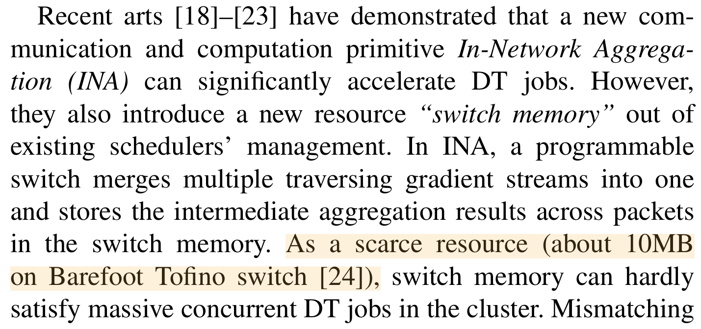INA 与交换机内存 · p.1 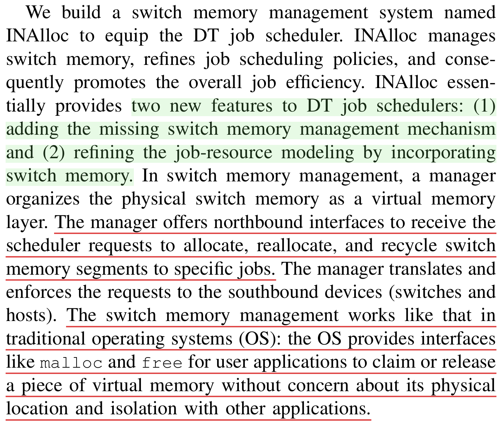INAlloc 的两项功能 · p.1 #在线重分配的两个挑战 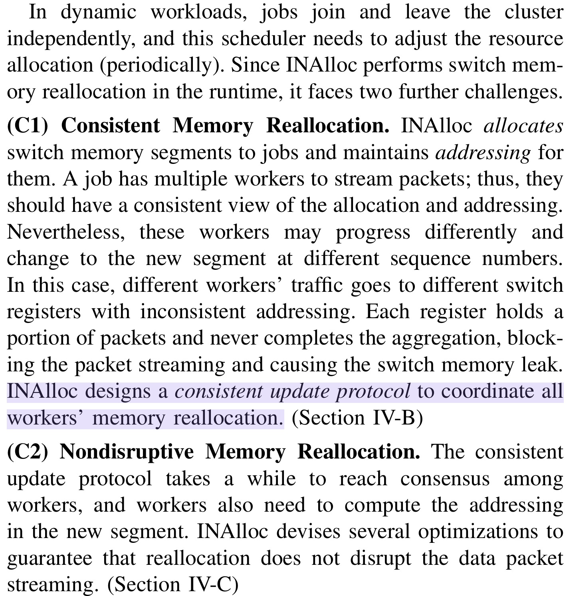一致性与不中断传输 · p.3 #寻址与哈希冲突 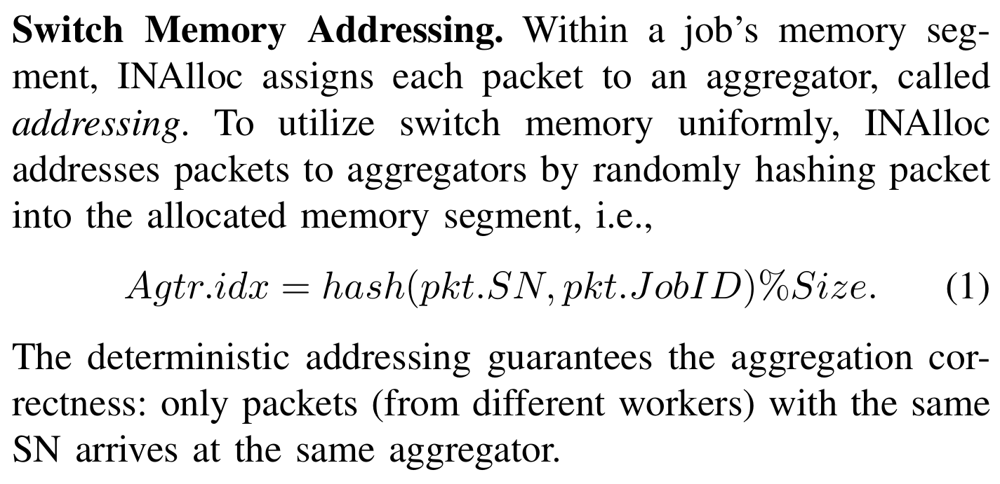交换机内存寻址 · p.4 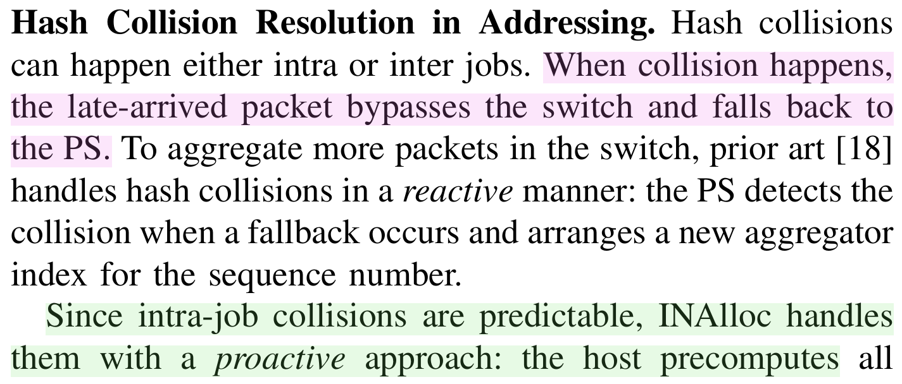碰撞、回退与预计算 · p.4 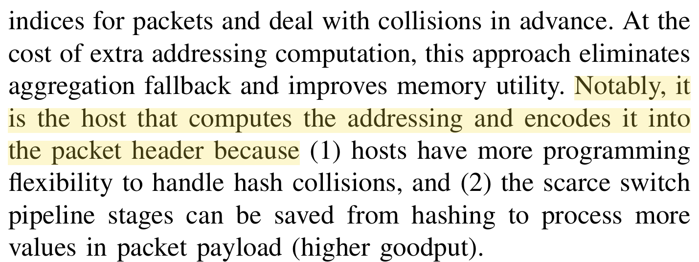主机计算并写入包头 · p.4 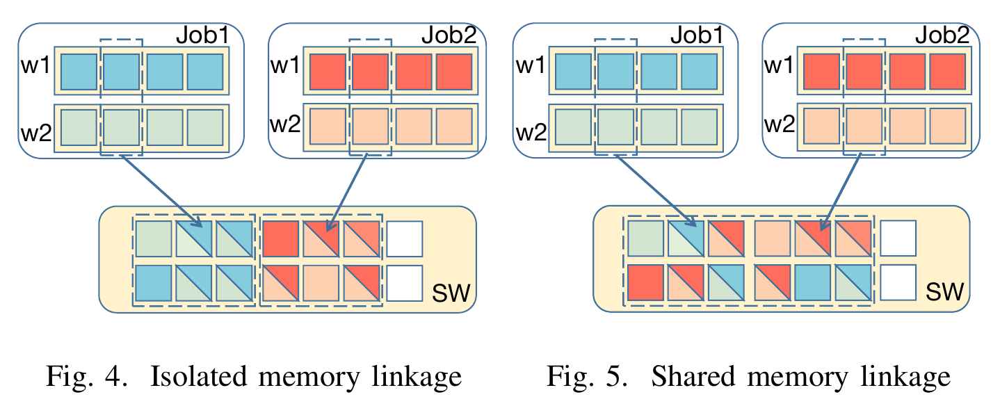隔离段与共享段 · Fig. 4–5 · p.4 #状态与包头 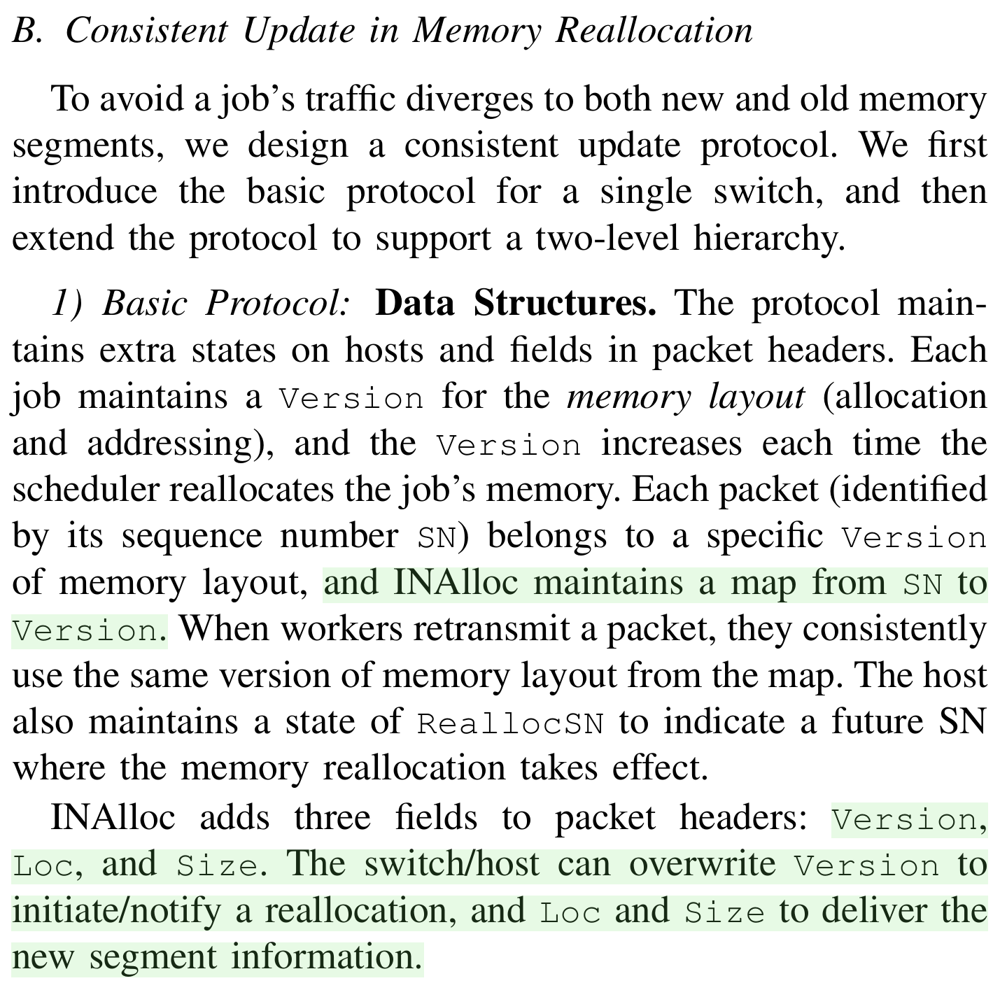一致性更新协议的数据结构 · p.4 #单机架与跨机架重分配 #Fig. 6 · 单机架的切换边界 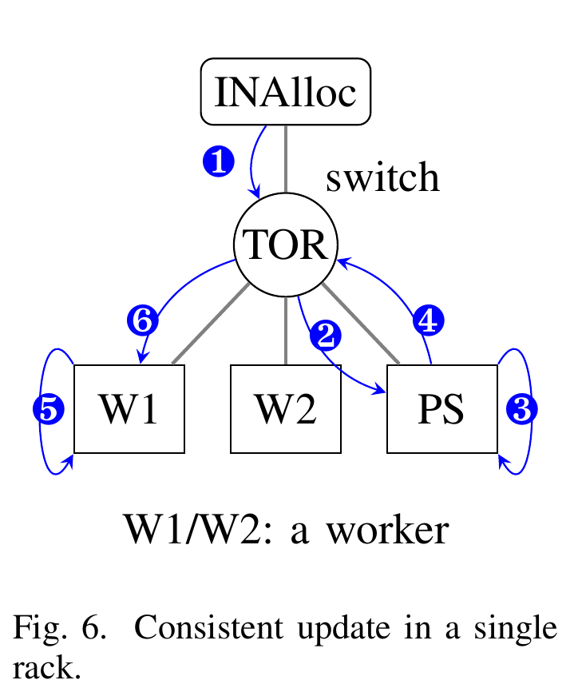单机架一致性更新 · Fig. 6 · p.4 #Fig. 7 · 跨机架的分层更新 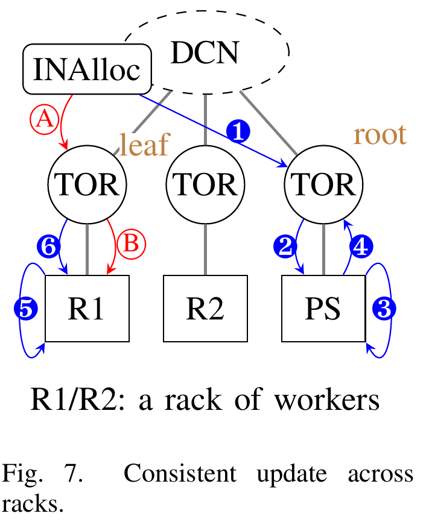跨机架一致性更新 · Fig. 7 · p.4 #丢包与重传 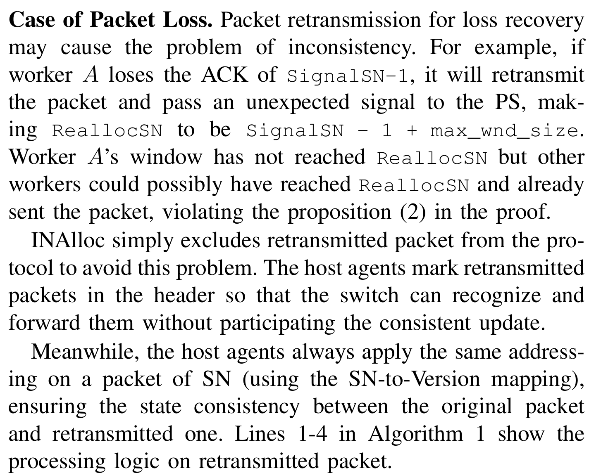丢包、重传与寻址一致性 · p.5 #调度策略与评估 #先提出三点调度原则 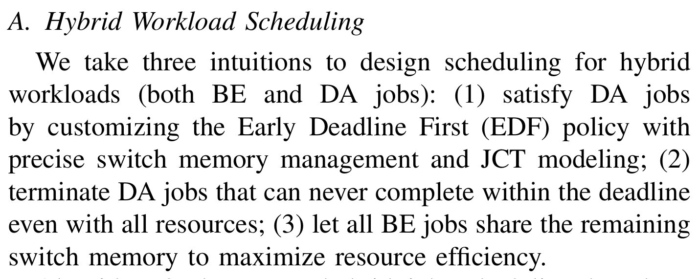混合工作负载调度的三条原则 · p.6 #Cross-rack 调度启发式 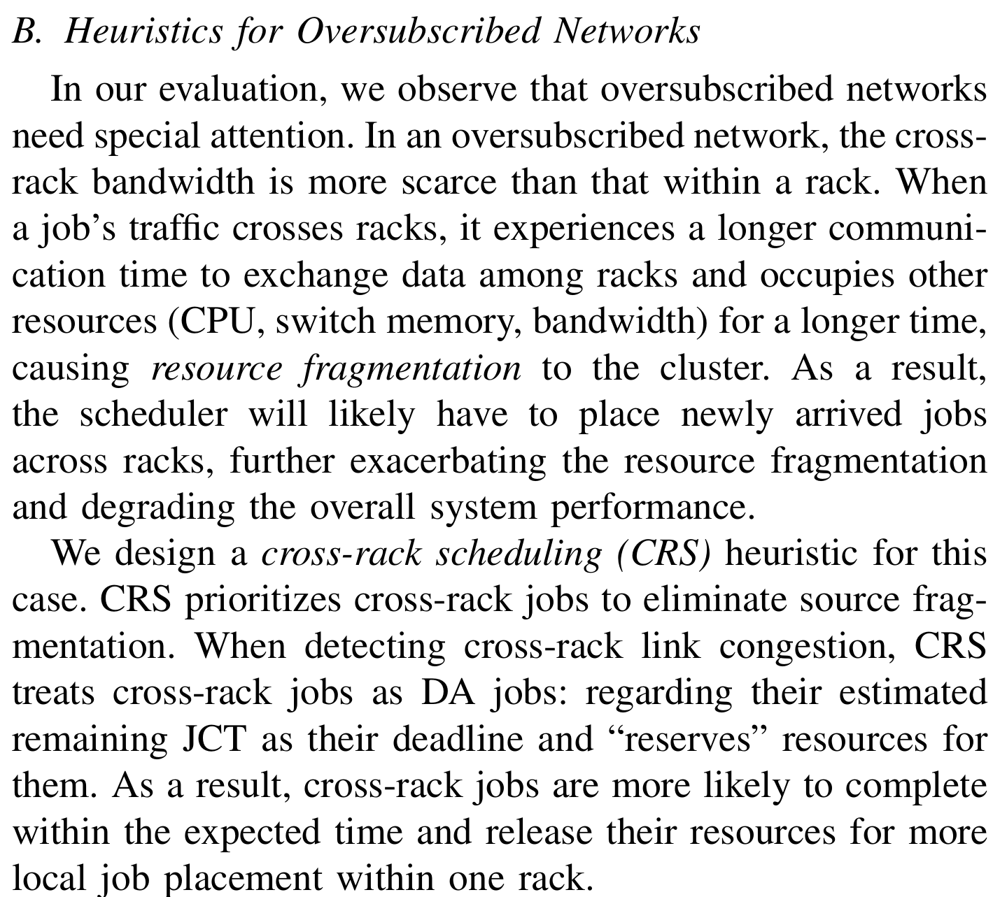超售网络的跨机架调度启发式 · p.7 #实验设置与评价口径 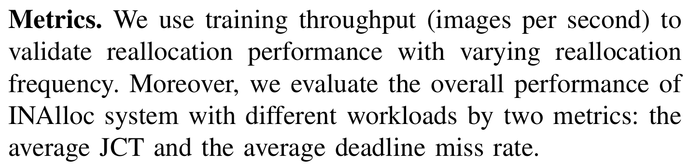评价指标 · p.7 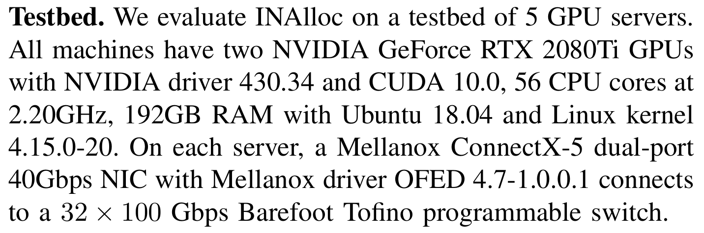实验配置 · p.7 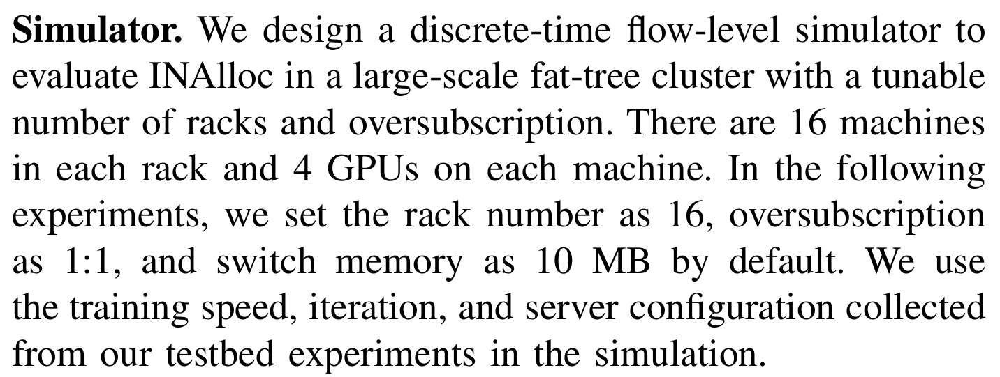离散模拟 · p.7 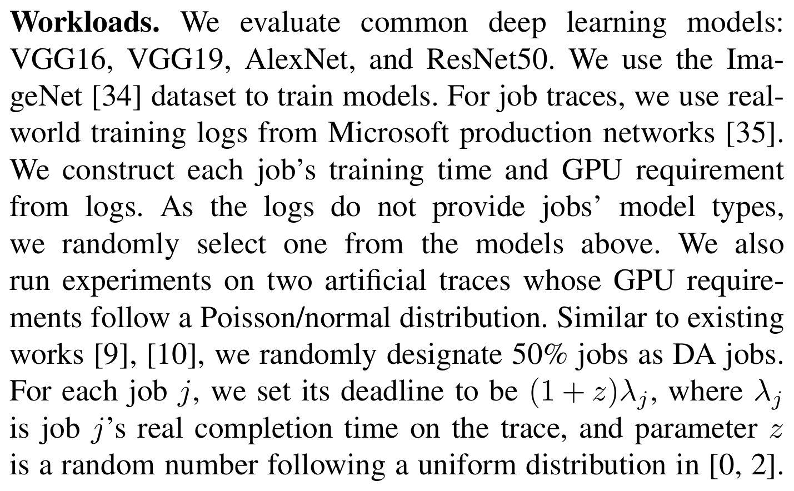工作负载 · p.7